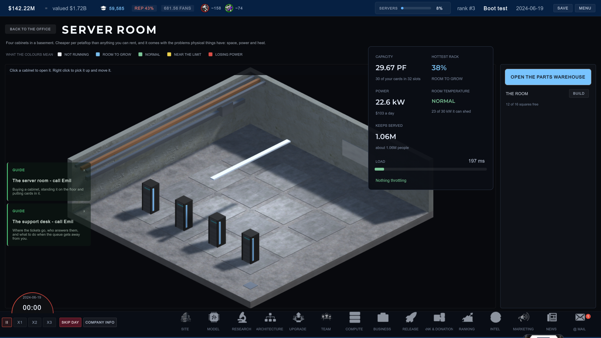

Nie wierzyłem we własną zbiórkę
Uruchomiłem zbiórkę 19 września, spisałem ją na straty w niecałe dwa tygodnie i zdążyłem już zdecydować, że zapłacę z własnej kieszeni. Dziś o wpół do siódmej rano ktoś, z kim nigdy nie rozmawiałem, zamknął ją w całości jedną wpłatą. I nadal nie udało mi się mu podziękować.
Jedenaście dni i już się poddałem
Steam bierze sto dolarów, raz, za każdą grę, zanim cokolwiek innego się wydarzy. 19 września wstawiłem na tę stronę mały licznik, a na GitHubie próg wsparcia, i powiedziałem partnerce na głos, że to nic nie da.
Mówiłem serio. To nie była skromność. Miałem już wyliczone, w którym tygodniu października zapłacę to z taksówkowych pieniędzy, byłem z tym pogodzony i część mnie nawet wolała tak: wtedy nikt nie jest mi nic winien i ja nikomu nie jestem.
Licznik stał na zerze. Przestałem go otwierać po jakimś czwartym dniu.
Jedenaście dni. Tyle zajęło mi spisanie na straty własnej zbiórki.
Dziś o 6:30, siedząc na kiblu i próbując się obudzić przed dwunastogodzinną zmianą, otworzyłem pocztę i zobaczyłem, że jedna osoba pokryła całą kwotę jedną wpłatą.

Sklep, który upadł przed tym wszystkim
Żeby wytłumaczyć, dlaczego byłem tak pewny, że to nie wypali, muszę cofnąć się dalej, niż widziała większość osób, które to czytają.
Przed PC Workmanem był sklep. Nazywał się HuckHub, istniał w pierwszych miesiącach 2025, trzy albo cztery miesiące przed pierwszą linijką programu, i nie został po nim żaden publiczny ślad.
Pomysł nie był głupi. Miał mieć bardzo mało produktów, a wszystko musiało przejść przez sito, zanim trafiłoby na stronę: czy to naprawdę działa, czy mogę podpisać się pod tym z czystym sumieniem. Powstało do tego mnóstwo grafik. I znacznie więcej planów.
Umarł, bo dowiedziałem się o sobie czegoś, czego już nie umiem oduczyć. Marketingowa nawijka nie jest dla mnie. Pisanie tekstów, które mają kogoś do czegoś przekonać, męczyło mnie bardziej niż jakakolwiek inna część tej roboty, i wychodziło mi źle, bo sam sobie nie wierzyłem, kiedy je pisałem.
To, czego chciałem zamiast tego, jest wąskie i nie zmieniło się do dziś: zrobić narzędzie, które rozwiązuje konkretny problem konkretnej osoby, oddać je za darmo i mówić o tym uczciwie, zamiast to reklamować.
Dlatego wszystko od tamtej pory jest darmowe. I dlatego też, jak się okazuje, nie potrafiłem sobie wyobrazić, żeby ktokolwiek miał za cokolwiek z tego zapłacić.
Rok rozdawania
PC Workman trafił do Microsoft Store po mniej więcej roku wieczorów. Dwadzieścia siedem wersji, od 1.0.0 z 27 października 2025 do 1.8.7 z 8 sierpnia 2026. Przeszedł automatyczne kontrole, przeszedł weryfikację człowieka i przez cały ten rok nie wziąłem od nikogo złotówki.
Społeczność się wtedy pojawiła, i nie z pieniędzmi, bo nie było za co płacić. Pojawiła się z pomysłami. Ze zgłoszeniami błędów. Z ludźmi, którzy mówili wprost, że coś wygląda źle, a to jest uprzejmość, która nic nie kosztuje tego, kto ją robi, i jest warta więcej niż prawie wszystko inne, co można dostać. Nadal takie wiadomości dostaję i nadal są najbardziej użyteczną rzeczą, jaka do mnie przychodzi.
Więc do połowy tego roku miałem kompletny, działający model tego, jak to się odbywa. Budujesz, ludzie pomagają ci to poprawić, nikt nie płaci, wszyscy wygrywają. Wierzyłem w społeczność bez zastrzeżeń. Po prostu wierzyłem w nią w kwestii pomysłów.
Pierwsza ściana, którą dało się naprawić pieniędzmi
A potem gra trafiła na coś, na co program nigdy nie trafił.
Scaling Laws to symulacja prowadzenia laboratorium sztucznej inteligencji od 2022 roku, robiona w Unity w te same wieczory. Każda przeszkoda w niej do tej pory była techniczna, a przeszkoda techniczna to taka, którą rozwiązuje się siadając i nie idąc spać. Taką walkę umiem toczyć.
Steam nią nie jest. Steam bierze sto dolarów za tytuł i nie istnieje wersja cięższej pracy, która produkuje sto dolarów.
Ta kwota jest mała i chcę to powiedzieć wprost, zamiast ją ubierać. Licząc wszystko, co poszło w PC Workmana przez ten rok, sprzęt, narzędzia i resztę, sto dolarów minęło dawno temu. Ale to były koszty, które wybierałem po kolei i przełykałem po cichu, na własnych warunkach. Ten był bramką z ceną wypisaną na wierzchu i pierwszą, jaką ten projekt w ogóle miał.
Więc zrobiłem próg wsparcia, wystawiłem licznik i po cichu nie dawałem temu żadnych szans.
Co wychodziło, kiedy nie patrzyłem
Tutaj jest inżynieria, i jest to uczciwa odpowiedź na pytanie, co naprawdę się poprawiło, a nie lista funkcji.
Za Scaling Laws stoją 1 624 testy automatyczne, 1 541 EditMode i 83 PlayMode, wszystkie zielone. A ostatnie wydania to prawie w całości jedna kategoria problemu, i jest to najbardziej niewygodna rzecz, jakiej nauczyłem się, robiąc to sam:
Trzy prawdziwe przykłady z obecnego builda. Wszystkie moje, wszystkie do sprawdzenia w publicznym repozytorium.
Kontrakt, który zabierał 1,2 mln dolarów i przez 270 dni nie robił nic. Licencja dystrybucyjna w grze kosztuje ponad milion i trwa większość roku. Przez cały ten okres nie zmieniała absolutnie niczego. Linijka, która miała poszerzyć twoją publiczność, nie miała w całej grze ani jednego wywołania. Linijka, która miała naliczyć partnerowi jego trzydzieści procent, była nazwana wyłącznie we własnym katalogu. Obie połowy były zaprojektowane, zapisane i zacommitowane. Żadna nie była z niczym połączona.
Przycisk przecięty na pół dolną krawędzią okna. Kontrolka dodająca wentylator do szafy serwerowej była na miejscu, ostylowana, działająca i narysowana w połowie poza ekranem. Zgłoszono to dwa razy jako „nie da się dodać wentylatorów", co jest dokładnie tym, jak to wygląda z fotela gracza.
Kursor tekstowy narysowany prawie na czarno na ciemnym tle. Właściwy kształt, właściwe miejsce, właściwa częstotliwość mrugania, całkowicie niewidoczny. Był taki od dnia, w którym to pole powstało.
Żadnego z nich nie mogło złapać 1 624 testy i żaden z tych testów nie jest winny, że ich nie złapał. One sterują symulacją bezpośrednio. Dowodzą, że reguła działa. Nie mogą dowieść, że człowiek do niej dotrze.
Każdy jeden z nich został znaleziony przez człowieka, który klikał. Większość przez moją partnerkę Samantę, która nie jest programistką, siada do gry i po prostu jej używa, i wręcza mi kartki notatek regularnie dłuższe niż wydanie, którego dotyczą.
Jeśli budujesz sam i masz z tego tekstu wynieść jedną rzecz, weź tę. Znajdź kogoś, kto nie jest tobą, i daj mu dwadzieścia minut z twoją rzeczą. Nie żeby ją ocenił. Żeby jej użył.
Godzina, adres i licencja, której nikt nie wypełnił
Spędziłem dziś rano jakąś godzinę na wymyślaniu, jak mu podziękować.
Jego profil na GitHubie nie ma maila, nie ma opisu, nie ma linków. Cztery repozytoria, dwa z nich to forki. W końcu wygrzebałem adres z metadanych commitów jego własnego projektu, napisałem staranną wiadomość i wysłałem.
Odbiła się. Ten adres nie istnieje.
Więc w chwili pisania tego tekstu ktoś obcy zapłacił moją opłatę wydawcy, a ja nie mam jak się z nim skontaktować. Mój ulubiony szczegół w tym wszystkim: pliki licencji w jego repozytoriach nadal mają <year> <name of author>, niewypełnione, dokładnie tak, jak przychodzą z szablonu. Nigdy nie byłem bardziej pewny, że ktoś jest prawdziwym człowiekiem, i nigdy mniej zdolny się z nim skontaktować.
Co się naprawdę zmieniło
Pieniądze idą na Steama i nigdzie indziej. Grę można pobrać za darmo, dopóki nie trafi do sklepu. PC Workman zawsze był darmowy i taki zostaje.
To, co się zmieniło, jest mniejsze niż sto dolarów i trudniejsze do zapisania. Przez rok miałem model tego wszystkiego, który działał, i to ja byłem w nim niepełny, bo ani razu nie wziąłem na poważnie możliwości, że ktoś, kto to czyta, uzna to za warte własnych pieniędzy.
Jedna osoba tak uznała. O wpół do siódmej rano. Dla taksówkarza z Radomia, z którym nigdy nie rozmawiała.
Jeśli budujesz coś sam i nikt tego jeszcze nie zauważył: trzymaj rachunki na widoku, trzymaj liczby sprawdzalne i mów wprost, co jeszcze nie działa. Ktoś to czyta, a co jakiś czas jeden z tych ludzi okazuje się czytać naprawdę uważnie.